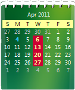
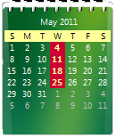
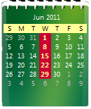
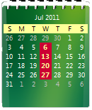

(Last Update: 05.05.2011)
Termine:
Mittwoch 16:00 Uhr bis 17:30 Uhr im
Raum D139 (Haus Bauwesen)
   
Überblick
Das Tutorium ist als freiwilliger begleitender Übungsblock zu dem eigentlichem Programmierkurs gedacht. Hier werden wir zusammen Unklarheiten beseitigen, die eventuell aus den Vorlesungen hervorgegangen sind. Hierbei geht es darum den Stoff gemeinsam nachzuarbeiten, unter anderen auch an anderen Beispielen, somit ihr auf die Klausur gut vorbereitet seid.
Ein paar Themen die wir Besprechen werden:
- - Collections - Generic Linked List
- - XML
- - Threads, Deadlock
- - Graphic User Interface (Swing)
- - Model View Controller Pattern
- - Events
Was ihr wissen solltet:
Bestandenes 'Medieninformatik Bachelor - Programmieren 1' - Modul wird vorrausgesetzt.
Loslegen
Wie bereits auf Prof. Schimkat seiner Webseite (
Link) verlinkt, braucht ihr zwei Sachen um loszulegen:
1. Die JDK (Java Developer Kit) (
Link)
2. Ein Editor eurer Wahl. In den Übungsräumen wird generell die Eclipse Version für Java (
Link) verwendet.
Eclipse bietet viele schicke Features, wie Syntax Highlighting, Code completion, Project management, Debugging, etc.
Ein anderer guter Java Editor ist Netbeans (
Link)
Java API (v7)(
Link)
Java Source Code (v7) (
Link)
Kontakt:
Wenn ihr mich erreichen wollt, schreibt mir am besten eine Mail unter:
janrabe@beuth-hochschule.de
Da ich in unserem Fachschaftsrat (FSR 6
Infoini@Facebook) bin um die Interessen der Studenten unseres Fachbereiches zu vertreten, werdet ihr mich auch sehr oft im INI-Raum (B030) finden. Dort stehe ich euch auch zu anderen Fragen rund ums Studium zur Verfügung.